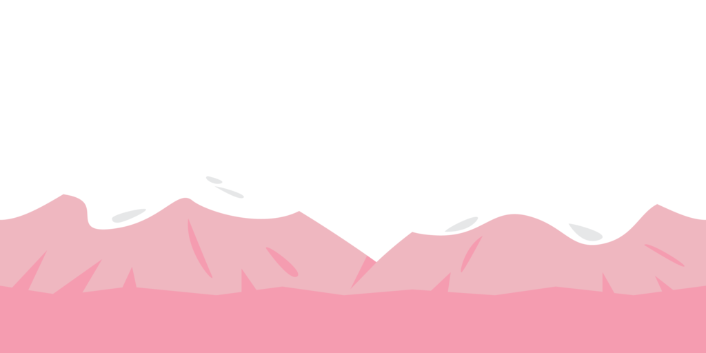
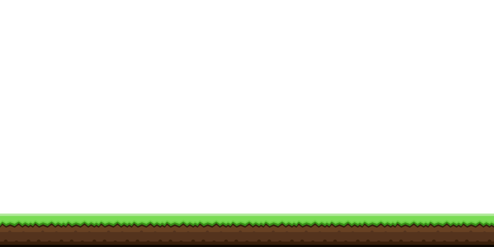

Exhibit 4 Textures and Transparency
What are we doing?
-
Some image file formats contain the alpha channel, which specifies the transparency
of the pixels.
- PNG and GIF file formats has it, but JPG does not.
-
Here, we have three images:
| Sky |
Mountain |
Ground |
|
|

|

|
-
In WebGL, alpha channel is generally used in tandem with blending.
- Howerver, you can write your shader to do whatever you want with it, like what we
did in Exhibit #3.
-
To simulate the transparency that is commonly understood (i.e., alpha indicates how much the image
allows what behind it to be seen), you need to do three things:
-
Enable blending and use
gl.SRC_ALPHA and gl.ONE_MINUS_SRC_ALPHA
as your blend functions.
-
Draw your images from BACK TO FRONT. This is very important.
-
In the fragment shader, just fetch and output the texture value. No special processing
is required.
- Btw, we took the images from OpenGameArt.
They were created by bevouliin.com, and the images are in the public domain.
We're very thankful of this generous artist.
- If you want to look for art assets for your final project, OpenGameArt is a good place to start.